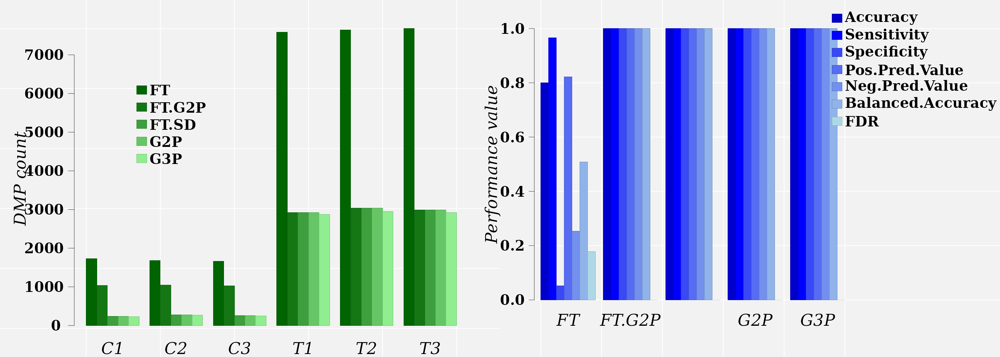

vignettes/Cutpoint_estimation_with_Methyl-IT.Rmd
Cutpoint_estimation_with_Methyl-IT.RmdAbstract
The discrimination of the methylation signal from the stochastic methylation background resultant from the standard (non-stressful) biological processes is a critical step for the genome-wide methylation analysis. Such a discrimination requires for the knowledge of the probability distribution of the information divergence of methylation levels and a proper evaluation of the classification performance of differentially methylated positions (DMPs) into two classes: DMPs from control and DMPs from treatment.
The probability of extreme methylation changes occurring spontaneously in a control population by the stochastic fluctuations inherent to biochemical processes and DNA maintenance (Ngo et al. 2016), requires the discrimination of this background variation from a biological treatment signal. The stochasticity of the the methylation process derives from the stochasticity inherent to biochemical processes (Min et al. 2005; Koslover and Spakowitz 2012). There are fundamental physical reasons to acknowledge that biochemical processes are subject to noise and fluctuations (Samoilov, Price, and Arkin 2006; Eldar and Elowitz 2010). So, regardless constant environment, statistically significant methylation changes can be found in control population with probability greater than zero and proportional to a Boltzmann factor (Sanchez and Mackenzie 2016).
Natural signals and those generated by human technology are not free of noise and, as mentioned above, the methylation signal is no exception. Only signal detection based approaches are designed to filter out the signal from the noise , in natural and in human generated signals.
The stochasticity of methylation regulatory machinery effects is presumed to reflect system heterogeneity; cells from the same tissue are not necessarily in the same state, and therefore, corresponding cytosine sites differ in their methylation status. Consequently, overall organismal response is conveyed as a statistical outcome that distinguishes the regulatory methylation signal from statistical background “noise”. Estimation of optimal cutoff value for the signal is an additional step to remove any remaining potential methylation background noise with probability \(0 ≤ \alpha ≤ 0.05\). We define as a methylation signal (DMP) each cytosine site with Hellinger Divergence values above the cutpoint (shown (Sanchez et al. 2019).
As a result, a differentially methylated position (DMP) as a cytosine position with high probability to be altered in methylation due to a treatment effect, distinct from spontaneous variation detected in the control population.
Note: This example was made with the MethylIT version 0.3.2 available at https://github.com/genomaths/MethylIT.
For the current example on methylation analysis with Methyl-IT we will use simulated data. Read-count matrices of methylated and unmethylated cytosine are generated with MethylIT.utils function simulateCounts. A standard analysis of this dataset is given in the web page: Methylation analysis with Methyl-IT
suppressPackageStartupMessages({ library(MethylIT) library(MethylIT.utils)} ) bmean <- function(alpha, beta) alpha/(alpha + beta) alpha.ct <- 0.09 alpha.tt <- 0.2 # The number of cytosine sites to generate sites = 50000 # Set a seed for pseudo-random number generation set.seed(124) control.nam <- c("C1", "C2", "C3") treatment.nam <- c("T1", "T2", "T3") # Reference group ref0 = simulateCounts(num.samples = 4, sites = sites, alpha = alpha.ct, beta = 0.5, size = 50, theta = 4.5, sample.ids = c("R1", "R2", "R3", "R4")) # Control group ctrl = simulateCounts(num.samples = 3, sites = sites, alpha = alpha.ct, beta = 0.5, size = 50, theta = 4.5, sample.ids = control.nam) # Treatment group treat = simulateCounts(num.samples = 3, sites = sites, alpha = alpha.tt, beta = 0.5, size = 50, theta = 4.5, sample.ids = treatment.nam) # Reference sample ref = poolFromGRlist(ref0, stat = "mean", num.cores = 4L, verbose = FALSE)
Total variation distance and Hellinger divergence are computed with estimateDivergence function:
divs <- estimateDivergence(ref = ref, indiv = c(ctrl, treat), Bayesian = TRUE, num.cores = 6L, percentile = 1, verbose = FALSE)
To get some statistical description about the sample is useful. Here, empirical critical values for the probability distribution of \(H\) and \(TV\) can is obtained using quantile function from the R package stats.
critical.val <- do.call(rbind, lapply(divs, function(x) { x <- x[x$hdiv > 0] hd.95 = quantile(x$hdiv, 0.95) tv.95 = quantile(abs(x$TV), 0.95) return(c(tv = tv.95, hd = hd.95)) })) critical.val
## tv.95% hd.95%
## C1 0.6842105 66.76081
## C2 0.6800000 66.71995
## C3 0.6777456 65.98495
## T1 0.9397681 138.68237
## T2 0.9478351 141.72637
## T3 0.9466565 141.77241In Methyl-IT, DMP estimation requires for the knowledge of the probability distribution of the noise (plus signal), which is used as null hypothesis.
The best fitted distribution model can be estimated with function gofReport. Here, for illustration purposes, we will use specific estimations based on 2- and 3-parameter gamma distribution models directly using function nonlinearFitDist.
nlms.g2p <- nonlinearFitDist(divs, column = 9L, verbose = FALSE, num.cores = 6L, dist.name = "Gamma2P") # Potential DMPs from 'Gamma2P' model pDMPs.g2p <- getPotentialDIMP(LR = divs, nlms = nlms.g2p, div.col = 9L, tv.cut = 0.68, tv.col = 7, alpha = 0.05, dist.name = "Gamma2P")
nlms.g3p <- nonlinearFitDist(divs, column = 9L, verbose = FALSE, num.cores = 6L, dist.name = "Gamma3P") # Potential DMPs from 'Gamma2P' model pDMPs.g3p <- getPotentialDIMP(LR = divs, nlms = nlms.g3p, div.col = 9L, tv.cut = 0.68, tv.col = 7, alpha = 0.05, dist.name = "Gamma3P")
As a result of the natural spontaneous variation, naturally occurring DMPs can be identified in samples from the control and treatment populations. Machine-learning algorithms implemented in Methyl-IT are applied to discriminate treatment-induced DMPs from those naturally generated.
The simple cutpoint estimation available in Methyl-IT is based on the application of Youden index (Youden 1950). Although cutpoints are estimated for a single variable, the classification performance can be evaluated for several variables and applying different model classifiers.
In the current example, the column carrying TV (div.col = 7L) will be used to estimate the cutpoint. The column values will be expressed in terms of \(TV_d=|p_{tt}-p_{ct}|\). A minimum cutpoint value for TV derived from the minimum 95% quantile (tv.cut = 0.92) found in the treatment group will be applied (see Methylation analysis with Methyl-IT).
Next, a logistic model classifier will be fitted with the 60% (prop = 0.6) of the raw data (training set) and then the resting 40% of individual samples will be used to evaluate the model performance. The predictor variable included in the model are specified with function parameter column (for more detail see estimateCutPoint or type ?estimateCutPoint in R console).
Here, we use the results of modeling the distribution of the Hellinger divergence (HD) of methylation levels through a 2-parameter gamma probability distribution model. The critical values for \(HD_{\alpha = 0.05}^{CT_{G2P}}\) used to get potential DMPs were:
nams <- names(nlms.g2p) crit <- unlist(lapply(nlms.g2p, function(x) qgamma(0.95, shape = x$Estimate[1], scale = x$Estimate[2]))) names(crit) <- nams crit
## C1 C2 C3 T1 T2 T3
## 58.59180 57.99972 57.81016 112.40001 113.92362 114.48802As before the cutpoint is estimated based on ‘Youden Index’ (Youden 1950). A PCA+LDA model classifier (classifier = “pca.lda”) is applied. That is, a principal component analysis (PCA) is applied on the original raw matrix of data and the four possible component (n.pc = 4) derived from the analysis are used in a further linear discriminant analysis (LDA). A scaling step is applied to the raw matrix of data before the application of the mentioned procedure (center = TRUE, scale = TRUE). Here, PCA will yield new orthogonal (non-correlated) variables, the principal components, which prevent any potential bias effect originated by any correlation or association of the original variables.
By using function estimateCutPoint, we can estimate the cutpoint, based on HD (div.col = 9L) or on \(TV_d\) (div.col = 7L):
# Cutpoint estimation for the FT approach using the ECDF critical value cut.g2p = estimateCutPoint(LR = pDMPs.g2p, simple = TRUE, column = c(hdiv = TRUE, bay.TV = TRUE, wprob = TRUE, pos = TRUE), classifier1 = "pca.lda", n.pc = 4, control.names = control.nam, treatment.names = treatment.nam, center = TRUE, scale = TRUE, clas.perf = TRUE, prop = 0.6, div.col = 9L) cut.g2p
## Cutpoint estimation with 'Youden Index'
## Simple cutpoint estimation
## Cutpoint = 114.22
##
## Cytosine sites from treatment have divergence values >= 114.22
##
## The accessible objects in the output list are:
## Length Class Mode
## cutpoint 1 -none- numeric
## testSetPerformance 6 confusionMatrix list
## testSetModel.FDR 1 -none- numeric
## model 2 pcaLDA list
## modelConfMatrix 6 confusionMatrix list
## initModel 1 -none- character
## postProbCut 1 -none- logical
## postCut 1 -none- logical
## classifier 1 -none- character
## statistic 1 -none- logical
## optStatVal 1 -none- logical
## cutpData 1 -none- logical
## initModelConfMatrix 6 confusionMatrix listAs indicated above, the model classifier performance and its corresponding false discovery rate can be retrieved as:
cut.g2p$testSetPerformance
## Confusion Matrix and Statistics
##
## Reference
## Prediction CT TT
## CT 319 0
## TT 0 3544
##
## Accuracy : 1
## 95% CI : (0.999, 1)
## No Information Rate : 0.9174
## P-Value [Acc > NIR] : < 2.2e-16
##
## Kappa : 1
##
## Mcnemar's Test P-Value : NA
##
## Sensitivity : 1.0000
## Specificity : 1.0000
## Pos Pred Value : 1.0000
## Neg Pred Value : 1.0000
## Prevalence : 0.9174
## Detection Rate : 0.9174
## Detection Prevalence : 0.9174
## Balanced Accuracy : 1.0000
##
## 'Positive' Class : TT
## cut.g2p$testSetModel.FDR
## [1] 0Here, DMP classification is modeled with PCA+QDA classifier (classifier = “pca.lda”). That is, principal component analysis (PCA) is applied on the original raw matrix of data and the four possible component (n.pc = 4) are used in a further linear discriminant analysis (LDA). A scaling step is applied to the raw matrix of data before the application of the mentioned procedure (center = TRUE, scale = TRUE). Next, a different model classifier can be applied to model the classification derived from the previous cutpoint estimation.
The same analyses for the cutpoint estimation can be performed for 3P gamma model
# Cutpoint estimation for the FT approach using the ECDF critical value cut.g3p = estimateCutPoint(LR = pDMPs.g3p, simple = TRUE, column = c(hdiv = TRUE, bay.TV = TRUE, wprob = TRUE, pos = TRUE), classifier1 = "pca.lda", n.pc = 4, control.names = control.nam, treatment.names = treatment.nam, center = TRUE, scale = TRUE, clas.perf = TRUE, prop = 0.6, div.col = 9L) cut.g3p
## Cutpoint estimation with 'Youden Index'
## Simple cutpoint estimation
## Cutpoint = 115.24
##
## Cytosine sites from treatment have divergence values >= 115.24
##
## The accessible objects in the output list are:
## Length Class Mode
## cutpoint 1 -none- numeric
## testSetPerformance 6 confusionMatrix list
## testSetModel.FDR 1 -none- numeric
## model 2 pcaLDA list
## modelConfMatrix 6 confusionMatrix list
## initModel 1 -none- character
## postProbCut 1 -none- logical
## postCut 1 -none- logical
## classifier 1 -none- character
## statistic 1 -none- logical
## optStatVal 1 -none- logical
## cutpData 1 -none- logical
## initModelConfMatrix 6 confusionMatrix listAs indicated above, the model classifier performance and its corresponding false discovery rate can be retrieved as:
cut.g3p$testSetPerformance
## Confusion Matrix and Statistics
##
## Reference
## Prediction CT TT
## CT 309 0
## TT 0 3483
##
## Accuracy : 1
## 95% CI : (0.999, 1)
## No Information Rate : 0.9185
## P-Value [Acc > NIR] : < 2.2e-16
##
## Kappa : 1
##
## Mcnemar's Test P-Value : NA
##
## Sensitivity : 1.0000
## Specificity : 1.0000
## Pos Pred Value : 1.0000
## Neg Pred Value : 1.0000
## Prevalence : 0.9185
## Detection Rate : 0.9185
## Detection Prevalence : 0.9185
## Balanced Accuracy : 1.0000
##
## 'Positive' Class : TT
## cut.g3p$testSetModel.FDR
## [1] 0The model obtained in the previous step can be used for further prediction with function predict from MethylIT.utils package. For example, we would take a random sample and run:
set.seed(1) randsampl <- unlist(pDMPs.g3p) randsampl <- randsampl[sample.int(length(randsampl), 10)] pred <- predict(cut.g3p$model, newdata = randsampl) pred
## $class
## [1] CT TT TT TT TT TT TT TT TT TT
## Levels: CT TT
##
## $posterior
## CT TT
## [1,] 1.000000e+00 1.19242e-08
## [2,] 5.231187e-46 1.00000e+00
## [3,] 2.136182e-45 1.00000e+00
## [4,] 6.739051e-47 1.00000e+00
## [5,] 2.015394e-46 1.00000e+00
## [6,] 2.379968e-46 1.00000e+00
## [7,] 3.473689e-46 1.00000e+00
## [8,] 1.760048e-46 1.00000e+00
## [9,] 7.640639e-47 1.00000e+00
## [10,] 3.254017e-47 1.00000e+00
##
## $x
## LD1
## [1,] -7.465499
## [2,] 1.041471
## [3,] 0.943772
## [4,] 1.183774
## [5,] 1.107704
## [6,] 1.096158
## [7,] 1.069901
## [8,] 1.117111
## [9,] 1.175055
## [10,] 1.234328The variable pred$posterior provides the posterior classification probabilities that a DMP could belong to control (CT) or to treatment (TT) group. The variable ‘x’ provides the cytosine methylation changes in terms of its values in the linear discriminant function LD1. Notice that, for each row, the sum of posterior probabilities is equal 1. By default, individuals with TT posterior probabilities greater than 0.5 are predicted to belong to the treatment class. For example:
classfiction = rep("CT", 10) classfiction[pred$posterior[, 2] > 0.5] <- "TT" classfiction
## [1] "CT" "TT" "TT" "TT" "TT" "TT" "TT" "TT" "TT" "TT"We can be more strict increasing the posterior classification probability cutoff
classfiction = rep("CT", 10) classfiction[pred$posterior[, 2] > 0.7] <- "TT" classfiction
## [1] "CT" "TT" "TT" "TT" "TT" "TT" "TT" "TT" "TT" "TT"The posterior classification probability cutoff can be controlled with parameter post.cut from estimateCutPoint function (default: \(post.cut=0.5\)).
In the next example the cutpoint estimation for the Hellinger divergence of methylation levels (div.col = 9L) is accomplished. Function estimateCutPoint can be used to search for a cutpoint as well. Two model classifiers can be used. classifiers1 will be used to estimate the posterior classification probabilities of DMP into those from control and those from treatment. These probabilities are then used to estimate the cutpoint in the range of values from, say, 0.5 to 0.8. Next, a classifier2 will be used to evaluate the classification performance. In this case, the search for an optimal cutpoint is accomplished maximizing the accuracy (stat = 0) of classifier2.
The ML search for an optimal cutpoint is accomplished in the set of potential DMPs, which were identified using a Gamma2P probability distribution model as null hypothesis.
cut.g2p = estimateCutPoint(LR = pDMPs.g2p, simple = FALSE, column = c(hdiv = TRUE, bay.TV = TRUE, wprob = TRUE, pos = TRUE), classifier1 = "pca.lda", classifier2 = "pca.qda", stat = 0, control.names = control.nam, treatment.names = treatment.nam, cut.values = seq(45, 114, 1), post.cut = 0.5, prop = 0.6, center = TRUE, scale = TRUE, n.pc = 4, div.col = 9L) cut.g2p
## Cutpoint estimation with 'pca.lda' classifier
## Cutpoint search performed using model posterior probabilities
##
## Posterior probability used to get the cutpoint = 0.5
## Cytosine sites with treatment PostProbCut >= 0.5 have a
## divergence value >= 112.4247
##
## Optimized statistic: Accuracy = 1
## Cutpoint = 112.42
##
## Model classifier 'pca.qda'
##
## The accessible objects in the output list are:
## Length Class Mode
## cutpoint 1 -none- numeric
## testSetPerformance 6 confusionMatrix list
## testSetModel.FDR 1 -none- numeric
## model 2 pcaQDA list
## modelConfMatrix 6 confusionMatrix list
## initModel 1 -none- character
## postProbCut 1 -none- numeric
## postCut 1 -none- numeric
## classifier 1 -none- character
## statistic 1 -none- character
## optStatVal 1 -none- numeric
## cutpData 1 -none- logicalModel performance in the test dataset is:
cut.g2p$testSetPerformance
## Confusion Matrix and Statistics
##
## Reference
## Prediction CT TT
## CT 1274 0
## TT 0 3580
##
## Accuracy : 1
## 95% CI : (0.9992, 1)
## No Information Rate : 0.7375
## P-Value [Acc > NIR] : < 2.2e-16
##
## Kappa : 1
##
## Mcnemar's Test P-Value : NA
##
## Sensitivity : 1.0000
## Specificity : 1.0000
## Pos Pred Value : 1.0000
## Neg Pred Value : 1.0000
## Prevalence : 0.7375
## Detection Rate : 0.7375
## Detection Prevalence : 0.7375
## Balanced Accuracy : 1.0000
##
## 'Positive' Class : TT
## Model performance in in the whole dataset is:
cut.g2p$modelConfMatrix
## Confusion Matrix and Statistics
##
## Reference
## Prediction CT TT
## CT 3184 0
## TT 0 8948
##
## Accuracy : 1
## 95% CI : (0.9997, 1)
## No Information Rate : 0.7376
## P-Value [Acc > NIR] : < 2.2e-16
##
## Kappa : 1
##
## Mcnemar's Test P-Value : NA
##
## Sensitivity : 1.0000
## Specificity : 1.0000
## Pos Pred Value : 1.0000
## Neg Pred Value : 1.0000
## Prevalence : 0.7376
## Detection Rate : 0.7376
## Detection Prevalence : 0.7376
## Balanced Accuracy : 1.0000
##
## 'Positive' Class : TT
## The False discovery rate is:
cut.g2p$testSetModel.FDR
## [1] 0The model classifier PCA+LDA has enough discriminatory power to discriminate control DMP from those induced by the treatment for HD values \(112.4247 \le HD\).
The probabilities \(P(HD \le 122.43)\) to observe a cytosine site with \(HD \le 112.4247\) on each individual is:
nams <- names(nlms.g2p) crit <- unlist(lapply(nlms.g2p, function(x) pgamma(cut.g2p$cutpoint, shape = x$Estimate[1], scale = x$Estimate[2]))) names(crit) <- nams crit
## C1 C2 C3 T1 T2 T3
## 0.9964704 0.9966560 0.9967314 0.9500279 0.9483024 0.9476610In other words, most of the methylation changes are not (and should not be) considered DMPs. Notice that although the same HD value could be found in the same differentially methylated cytosine site in control and treatment, if the probabilities distributions of the information divergences (null hypotheses) from control and treatment are different, then these DMPs can be distinguished.
Likewise, for the 3-parameter gamma model we can search for an optimal cutpoint:
cut.g3p = estimateCutPoint(LR = pDMPs.g3p, simple = FALSE, column = c(hdiv = TRUE, TV = TRUE, wprob = TRUE, pos = TRUE), classifier1 = "pca.lda", classifier2 = "pca.qda", stat = 0, control.names = control.nam, treatment.names = treatment.nam, cut.values = seq(45, 114, 1), post.cut = 0.5, clas.perf = TRUE, prop = 0.6, center = TRUE, scale = TRUE, n.pc = 4, div.col = 9L) cut.g3p
## Cutpoint estimation with 'pca.lda' classifier
## Cutpoint search performed using model posterior probabilities
##
## Posterior probability used to get the cutpoint = 0.5
## Cytosine sites with treatment PostProbCut >= 0.5 have a
## divergence value >= 113.497
##
## Optimized statistic: Accuracy = 1
## Cutpoint = 113.5
##
## Model classifier 'pca.qda'
##
## The accessible objects in the output list are:
## Length Class Mode
## cutpoint 1 -none- numeric
## testSetPerformance 6 confusionMatrix list
## testSetModel.FDR 1 -none- numeric
## model 2 pcaQDA list
## modelConfMatrix 6 confusionMatrix list
## initModel 1 -none- character
## postProbCut 1 -none- numeric
## postCut 1 -none- numeric
## classifier 1 -none- character
## statistic 1 -none- character
## optStatVal 1 -none- numeric
## cutpData 1 -none- logicalDMPs are identified with function selectDIMP
g2p.dmps <- selectDIMP(pDMPs.g2p, div.col = 9L, cutpoint = cut.g2p$cutpoint) g3p.dmps <- selectDIMP(pDMPs.g3p, div.col = 9L, cutpoint = cut.g3p$cutpoint)
For comparison purposes DMPs are estimated with Fisher’s exact test as well.
ft. = FisherTest(LR = divs, tv.cut = 0.68, pAdjustMethod = "BH", pvalCutOff = 0.05, num.cores = 4L, verbose = FALSE, saveAll = FALSE) ft.dmps <- getPotentialDIMP(LR = ft., div.col = 9L, dist.name = "None", tv.cut = 0.68, tv.col = 7, alpha = 0.05)
After the cutpoint application to select DMPs, a Monte Carlo (bootstrap) analysis reporting several classifier performance indicators can be accomplished by using function evaluateDIMPclass and its settings output = “mc.val” and num.boot.
g2p.class = evaluateDIMPclass(LR = g2p.dmps, control.names = control.nam, treatment.names = treatment.nam, column = c(hdiv = TRUE, TV = TRUE, wprob = TRUE, pos = TRUE), classifier = "pca.qda", n.pc = 4, center = TRUE, scale = TRUE, num.boot = 300, output = "all", prop = 0.6 ) g2p.class$mc.val
## Accuracy Kappa AccuracyLower AccuracyUpper AccuracyNull
## Min. :1 Min. :1 Min. :0.9991 Min. :1 Min. :0.9139
## 1st Qu.:1 1st Qu.:1 1st Qu.:0.9991 1st Qu.:1 1st Qu.:0.9139
## Median :1 Median :1 Median :0.9991 Median :1 Median :0.9139
## Mean :1 Mean :1 Mean :0.9991 Mean :1 Mean :0.9139
## 3rd Qu.:1 3rd Qu.:1 3rd Qu.:0.9991 3rd Qu.:1 3rd Qu.:0.9139
## Max. :1 Max. :1 Max. :0.9991 Max. :1 Max. :0.9139
##
## AccuracyPValue McnemarPValue Sensitivity Specificity Pos Pred Value
## Min. :9.096e-154 Min. : NA Min. :1 Min. :1 Min. :1
## 1st Qu.:9.096e-154 1st Qu.: NA 1st Qu.:1 1st Qu.:1 1st Qu.:1
## Median :9.096e-154 Median : NA Median :1 Median :1 Median :1
## Mean :9.096e-154 Mean :NaN Mean :1 Mean :1 Mean :1
## 3rd Qu.:9.096e-154 3rd Qu.: NA 3rd Qu.:1 3rd Qu.:1 3rd Qu.:1
## Max. :9.096e-154 Max. : NA Max. :1 Max. :1 Max. :1
## NA's :300
## Neg Pred Value Precision Recall F1 Prevalence
## Min. :1 Min. :1 Min. :1 Min. :1 Min. :0.9139
## 1st Qu.:1 1st Qu.:1 1st Qu.:1 1st Qu.:1 1st Qu.:0.9139
## Median :1 Median :1 Median :1 Median :1 Median :0.9139
## Mean :1 Mean :1 Mean :1 Mean :1 Mean :0.9139
## 3rd Qu.:1 3rd Qu.:1 3rd Qu.:1 3rd Qu.:1 3rd Qu.:0.9139
## Max. :1 Max. :1 Max. :1 Max. :1 Max. :0.9139
##
## Detection Rate Detection Prevalence Balanced Accuracy
## Min. :0.9139 Min. :0.9139 Min. :1
## 1st Qu.:0.9139 1st Qu.:0.9139 1st Qu.:1
## Median :0.9139 Median :0.9139 Median :1
## Mean :0.9139 Mean :0.9139 Mean :1
## 3rd Qu.:0.9139 3rd Qu.:0.9139 3rd Qu.:1
## Max. :0.9139 Max. :0.9139 Max. :1
## Likewise the evaluation of the DMP classification performance can be accomplished for DMPs estimated based on the \('Gamma3P'\) model:
g3p.class = evaluateDIMPclass(LR = g3p.dmps, control.names = control.nam, treatment.names = treatment.nam, column = c(hdiv = TRUE, TV = TRUE, wprob = TRUE, pos = TRUE), classifier = "pca.qda", n.pc = 4, center = TRUE, scale = TRUE, num.boot = 300, output = "all", prop = 0.6 ) g3p.class$mc.val
## Accuracy Kappa AccuracyLower AccuracyUpper AccuracyNull
## Min. :1 Min. :1 Min. :0.999 Min. :1 Min. :0.914
## 1st Qu.:1 1st Qu.:1 1st Qu.:0.999 1st Qu.:1 1st Qu.:0.914
## Median :1 Median :1 Median :0.999 Median :1 Median :0.914
## Mean :1 Mean :1 Mean :0.999 Mean :1 Mean :0.914
## 3rd Qu.:1 3rd Qu.:1 3rd Qu.:0.999 3rd Qu.:1 3rd Qu.:0.914
## Max. :1 Max. :1 Max. :0.999 Max. :1 Max. :0.914
##
## AccuracyPValue McnemarPValue Sensitivity Specificity Pos Pred Value
## Min. :1.393e-150 Min. : NA Min. :1 Min. :1 Min. :1
## 1st Qu.:1.393e-150 1st Qu.: NA 1st Qu.:1 1st Qu.:1 1st Qu.:1
## Median :1.393e-150 Median : NA Median :1 Median :1 Median :1
## Mean :1.393e-150 Mean :NaN Mean :1 Mean :1 Mean :1
## 3rd Qu.:1.393e-150 3rd Qu.: NA 3rd Qu.:1 3rd Qu.:1 3rd Qu.:1
## Max. :1.393e-150 Max. : NA Max. :1 Max. :1 Max. :1
## NA's :300
## Neg Pred Value Precision Recall F1 Prevalence
## Min. :1 Min. :1 Min. :1 Min. :1 Min. :0.914
## 1st Qu.:1 1st Qu.:1 1st Qu.:1 1st Qu.:1 1st Qu.:0.914
## Median :1 Median :1 Median :1 Median :1 Median :0.914
## Mean :1 Mean :1 Mean :1 Mean :1 Mean :0.914
## 3rd Qu.:1 3rd Qu.:1 3rd Qu.:1 3rd Qu.:1 3rd Qu.:0.914
## Max. :1 Max. :1 Max. :1 Max. :1 Max. :0.914
##
## Detection Rate Detection Prevalence Balanced Accuracy
## Min. :0.914 Min. :0.914 Min. :1
## 1st Qu.:0.914 1st Qu.:0.914 1st Qu.:1
## Median :0.914 Median :0.914 Median :1
## Mean :0.914 Mean :0.914 Mean :1
## 3rd Qu.:0.914 3rd Qu.:0.914 3rd Qu.:1
## Max. :0.914 Max. :0.914 Max. :1
## We do not have evidence to support statistical differences between the classification performances estimated for ‘Gamma2P’ and ‘Gamma3P’ probability distribution models. Hence, in this case we select the model that yield the lowest cutpoint
Classification performance results obtained with Monte Carlos sampling for the \(Gamma2P\) and \(Gamma3P\) models are quite different from those obtained with FT:
ft.class = evaluateDIMPclass(LR = ft.dmps, control.names = control.nam, treatment.names = treatment.nam, column = c(hdiv = TRUE, TV = TRUE, wprob = TRUE, pos = TRUE), classifier = "pca.lda", n.pc = 4, center = TRUE, scale = TRUE, num.boot = 300, output = "all", prop = 0.6 ) ft.class$mc.val
## Accuracy Kappa AccuracyLower AccuracyUpper
## Min. :0.8076 Min. :-0.007635 Min. :0.8001 Min. :0.8148
## 1st Qu.:0.8105 1st Qu.: 0.005355 1st Qu.:0.8031 1st Qu.:0.8177
## Median :0.8110 Median : 0.007678 Median :0.8036 Median :0.8182
## Mean :0.8110 Mean : 0.007553 Mean :0.8036 Mean :0.8182
## 3rd Qu.:0.8115 3rd Qu.: 0.009748 3rd Qu.:0.8041 3rd Qu.:0.8187
## Max. :0.8137 Max. : 0.020669 Max. :0.8064 Max. :0.8209
## AccuracyNull AccuracyPValue McnemarPValue Sensitivity
## Min. :0.8188 Min. :0.9205 Min. :0 Min. :0.9835
## 1st Qu.:0.8188 1st Qu.:0.9781 1st Qu.:0 1st Qu.:0.9857
## Median :0.8188 Median :0.9847 Median :0 Median :0.9863
## Mean :0.8188 Mean :0.9827 Mean :0 Mean :0.9863
## 3rd Qu.:0.8188 3rd Qu.:0.9888 3rd Qu.:0 3rd Qu.:0.9868
## Max. :0.8188 Max. :0.9990 Max. :0 Max. :0.9893
## Specificity Pos Pred Value Neg Pred Value Precision
## Min. :0.01134 Min. :0.8181 Min. :0.1337 Min. :0.8181
## 1st Qu.:0.01726 1st Qu.:0.8193 1st Qu.:0.2150 1st Qu.:0.8193
## Median :0.01874 Median :0.8196 Median :0.2318 Median :0.8196
## Mean :0.01858 Mean :0.8196 Mean :0.2304 Mean :0.8196
## 3rd Qu.:0.02022 3rd Qu.:0.8198 3rd Qu.:0.2455 3rd Qu.:0.8198
## Max. :0.02663 Max. :0.8208 Max. :0.3187 Max. :0.8208
## Recall F1 Prevalence Detection Rate
## Min. :0.9835 Min. :0.8933 Min. :0.8188 Min. :0.8053
## 1st Qu.:0.9857 1st Qu.:0.8950 1st Qu.:0.8188 1st Qu.:0.8071
## Median :0.9863 Median :0.8952 Median :0.8188 Median :0.8076
## Mean :0.9863 Mean :0.8952 Mean :0.8188 Mean :0.8076
## 3rd Qu.:0.9868 3rd Qu.:0.8955 3rd Qu.:0.8188 3rd Qu.:0.8080
## Max. :0.9893 Max. :0.8969 Max. :0.8188 Max. :0.8101
## Detection Prevalence Balanced Accuracy
## Min. :0.9825 Min. :0.4975
## 1st Qu.:0.9848 1st Qu.:0.5017
## Median :0.9853 Median :0.5025
## Mean :0.9854 Mean :0.5024
## 3rd Qu.:0.9860 3rd Qu.:0.5031
## Max. :0.9879 Max. :0.5066A quite different story is found when information on the probability distribution of noise (null hypothesis) is added to the classifier:
ft.g2p.dmps <- getPotentialDIMP(LR = ft., nlms = nlms.g2p, div.col = 9L, tv.cut = 0.68, tv.col = 7, alpha = 0.05, dist.name = "Gamma2P") ft.g2p.class = evaluateDIMPclass(LR = ft.g2p.dmps, control.names = control.nam, treatment.names = treatment.nam, column = c(hdiv = TRUE, TV = TRUE, wprob = TRUE, pos = TRUE), classifier = "pca.lda", n.pc = 4, center = TRUE, scale = TRUE, num.boot = 300, output = "all", prop = 0.6 ) ft.g2p.class$mc.val
## Accuracy Kappa AccuracyLower AccuracyUpper AccuracyNull
## Min. :1 Min. :1 Min. :0.9992 Min. :1 Min. :0.7375
## 1st Qu.:1 1st Qu.:1 1st Qu.:0.9992 1st Qu.:1 1st Qu.:0.7375
## Median :1 Median :1 Median :0.9992 Median :1 Median :0.7375
## Mean :1 Mean :1 Mean :0.9992 Mean :1 Mean :0.7375
## 3rd Qu.:1 3rd Qu.:1 3rd Qu.:0.9992 3rd Qu.:1 3rd Qu.:0.7375
## Max. :1 Max. :1 Max. :0.9992 Max. :1 Max. :0.7375
##
## AccuracyPValue McnemarPValue Sensitivity Specificity Pos Pred Value
## Min. :0 Min. : NA Min. :1 Min. :1 Min. :1
## 1st Qu.:0 1st Qu.: NA 1st Qu.:1 1st Qu.:1 1st Qu.:1
## Median :0 Median : NA Median :1 Median :1 Median :1
## Mean :0 Mean :NaN Mean :1 Mean :1 Mean :1
## 3rd Qu.:0 3rd Qu.: NA 3rd Qu.:1 3rd Qu.:1 3rd Qu.:1
## Max. :0 Max. : NA Max. :1 Max. :1 Max. :1
## NA's :300
## Neg Pred Value Precision Recall F1 Prevalence
## Min. :1 Min. :1 Min. :1 Min. :1 Min. :0.7375
## 1st Qu.:1 1st Qu.:1 1st Qu.:1 1st Qu.:1 1st Qu.:0.7375
## Median :1 Median :1 Median :1 Median :1 Median :0.7375
## Mean :1 Mean :1 Mean :1 Mean :1 Mean :0.7375
## 3rd Qu.:1 3rd Qu.:1 3rd Qu.:1 3rd Qu.:1 3rd Qu.:0.7375
## Max. :1 Max. :1 Max. :1 Max. :1 Max. :0.7375
##
## Detection Rate Detection Prevalence Balanced Accuracy
## Min. :0.7375 Min. :0.7375 Min. :1
## 1st Qu.:0.7375 1st Qu.:0.7375 1st Qu.:1
## Median :0.7375 Median :0.7375 Median :1
## Mean :0.7375 Mean :0.7375 Mean :1
## 3rd Qu.:0.7375 3rd Qu.:0.7375 3rd Qu.:1
## Max. :0.7375 Max. :0.7375 Max. :1
## Now, we add additional information about the optimal cutpoint
ft.g2p_cutp.dmps <- selectDIMP(ft.g2p.dmps, div.col = 9L, cutpoint = cut.g2p$cutpoint) ft.g2p_cut.class = evaluateDIMPclass(LR = ft.g2p_cutp.dmps, control.names = control.nam, treatment.names = treatment.nam, column = c(hdiv = TRUE, TV = TRUE, wprob = TRUE, pos = TRUE), classifier = "pca.lda", n.pc = 4, center = TRUE, scale = TRUE, num.boot = 300, output = "all", prop = 0.6 ) ft.g2p_cut.class$mc.val
## Accuracy Kappa AccuracyLower AccuracyUpper AccuracyNull
## Min. :1 Min. :1 Min. :0.9991 Min. :1 Min. :0.9139
## 1st Qu.:1 1st Qu.:1 1st Qu.:0.9991 1st Qu.:1 1st Qu.:0.9139
## Median :1 Median :1 Median :0.9991 Median :1 Median :0.9139
## Mean :1 Mean :1 Mean :0.9991 Mean :1 Mean :0.9139
## 3rd Qu.:1 3rd Qu.:1 3rd Qu.:0.9991 3rd Qu.:1 3rd Qu.:0.9139
## Max. :1 Max. :1 Max. :0.9991 Max. :1 Max. :0.9139
##
## AccuracyPValue McnemarPValue Sensitivity Specificity Pos Pred Value
## Min. :9.096e-154 Min. : NA Min. :1 Min. :1 Min. :1
## 1st Qu.:9.096e-154 1st Qu.: NA 1st Qu.:1 1st Qu.:1 1st Qu.:1
## Median :9.096e-154 Median : NA Median :1 Median :1 Median :1
## Mean :9.096e-154 Mean :NaN Mean :1 Mean :1 Mean :1
## 3rd Qu.:9.096e-154 3rd Qu.: NA 3rd Qu.:1 3rd Qu.:1 3rd Qu.:1
## Max. :9.096e-154 Max. : NA Max. :1 Max. :1 Max. :1
## NA's :300
## Neg Pred Value Precision Recall F1 Prevalence
## Min. :1 Min. :1 Min. :1 Min. :1 Min. :0.9139
## 1st Qu.:1 1st Qu.:1 1st Qu.:1 1st Qu.:1 1st Qu.:0.9139
## Median :1 Median :1 Median :1 Median :1 Median :0.9139
## Mean :1 Mean :1 Mean :1 Mean :1 Mean :0.9139
## 3rd Qu.:1 3rd Qu.:1 3rd Qu.:1 3rd Qu.:1 3rd Qu.:0.9139
## Max. :1 Max. :1 Max. :1 Max. :1 Max. :0.9139
##
## Detection Rate Detection Prevalence Balanced Accuracy
## Min. :0.9139 Min. :0.9139 Min. :1
## 1st Qu.:0.9139 1st Qu.:0.9139 1st Qu.:1
## Median :0.9139 Median :0.9139 Median :1
## Mean :0.9139 Mean :0.9139 Mean :1
## 3rd Qu.:0.9139 3rd Qu.:0.9139 3rd Qu.:1
## Max. :0.9139 Max. :0.9139 Max. :1
## In other words, information on the probability distributions of the natural spontaneous methylation variation in the control and treatment population are essential to discriminate the background noise from the treatment induced signal.
DMP count data:
dt <- t(rbind(G2P = sapply(g2p.dmps, length), G3P = sapply(g3p.dmps, length), FT = sapply(ft.dmps, length), FT.G2P = sapply(ft.g2p.dmps, length), FT.SD = sapply(ft.g2p_cutp.dmps, length) )) dt
## G2P G3P FT FT.G2P FT.SD
## C1 255 251 1730 1055 255
## C2 306 298 1682 1070 306
## C3 281 276 1657 1059 281
## T1 2925 2871 7589 2926 2925
## T2 3032 2965 7646 3032 3032
## T3 2990 2934 7679 2990 2990The comparison between the approaches FT.G2P and FT.SD (full signal detection on FT output) tells us that only 255, 306, and 281 cytosine sites detected with FT in the control samples C1, C2, and C3, respectively, carry methylation signals comparable (in magnitude) to those signals induced by the treatment.
Classification performance data:
df <- data.frame(method = c("FT", "FT.G2P", "FT.SD", "G2P", "G3P"), rbind(c(colMeans(ft.class$boots)[c(1, 8:11, 18)], FDR = ft.class$con.mat$FDR), c(colMeans(ft.g2p.class$boots)[c(1, 8:11, 18)], FDR = ft.g2p.class$con.mat$FDR), c(colMeans(ft.g2p_cut.class$boots)[c(1, 8:11, 18)], FDR = ft.g2p_cut.class$con.mat$FDR), c(colMeans(g2p.class$boots)[c(1, 8:11, 18)], FDR = g2p.class$con.mat$FDR), c(colMeans(g3p.class$boots)[c(1, 8:11, 18)], FDR = g3p.class$con.mat$FDR) ))
Graphics:
color <- c("darkgreen", "#147714FF", "#3D9F3DFF", "#66C666FF", "#90EE90FF") dt <- data.frame(dt, sample = names(g2p.dmps)) ## ------------------------- DMP count graphic --------------------------------- par(family = "serif", lwd = 0.1, cex = 1, mar = c(2,5,2,2), mfcol = c(1, 2)) barplot(cbind(FT, FT.G2P, FT.SD, G2P, G3P) ~ sample, panel.first={points(0, 0, pch=16, cex=1e6, col="grey95") grid(col="white", lty = 1, lwd = 1)}, data = dt, beside = TRUE, legend.text = TRUE, las = 1, lwd = 0.05, yaxt = "n", cex.names = 1.4, font = 3, xlab = "", col = color, args.legend = list(x=10, y=6000, text.font = 2, box.lwd = 0, horiz = FALSE, adj = 0, xjust = 0.65, yjust = 0.8, bty = "n", cex = 1.2, x.intersp = 0.2, inset = -1, ncol = 1, fill = color)) axis(2, hadj = 0.9, las = 2, lwd = 0.4, tck = -0.02, cex.axis = 1.2, font = 2, line = -0.2) mtext(side = 2, text = "DMP count", line = 3, cex = 1.4, font = 3) ## ------------------ DMP classifiction performance graphic ------------------- color <- c("mediumblue", "#0000FFFF", "#3949F6FF", "#566CF2FF", "#7390EEFF", "#90B3EAFF", "#ADD8E6FF") labs <- df$method par(family = "serif", lwd = 0.1, cex = 1, mar = c(4,2,2,10)) x <- barplot(cbind(Accuracy, Sensitivity, Specificity, Pos.Pred.Value, Neg.Pred.Value, Balanced.Accuracy, FDR) ~ method, panel.first = {points(0, 0, pch=16, cex=1e6, col="grey95") grid(col="white", lty = 1, lwd = 1)}, data = df, beside = TRUE, legend.text = TRUE, las = 1, lwd = 0.1, yaxt = "n", cex.names = 1.4, font = 3, xlab = "", col = color, ylim = c(0,1), args.legend = list(x = 52, y = 1., text.font = 2, box.lwd = 0, horiz = FALSE, adj = 0, xjust = 0.65, yjust = 0.8, bty = "n", cex = 1.2, x.intersp = 0.2, inset = -1, ncol = 1, fill = color)) axis(2, hadj = 0.8, las = 2, lwd = 0.4, tck = -0.02, cex.axis = 1.2, font = 2, line = -0.4) mtext(side = 2, text = "Performance value", line = 2, cex = 1.4, font = 3)

FT.G2P and FT.SD approaches lead to excellent classification performances on this data set. At this point, we can appeal the parsimony principle, follows from Occam’s razor that states “among competing hypotheses, the hypothesis with the fewest assumptions should be selected. In other words, results indicates that the signal-detection and machine-learning approach is sufficient (El Naqa et al. 2018; Sanchez et al. 2019).
A proper discrimination of the methylation signal from the stochastic methylation background requires for the knowledge of probability distributions of the methylation signal from control and treatment population. Such a knowledge permits a suitable estimation of the cutoff value to discriminate the methylation signal induced by the treatment from the stochastic methylation background detected in the control group.
It does not matter how significant a differentially methylation event for a given cytosine position would be (after the application of some statistical test), but on how big the probability to be observed in the control group is. In simple words, if for a given DMP the probability of to be observed in the control is big enough, then such a DMP did not result from a treatment effect.
A suitable evaluation on how much the mentioned probability can be big enough derives by estimating an optimal cutpoint. But a classification into two groups results from the cutpoint estimation and the problem on the estimation of such a cutpoint is equivalent to find a discriminatory function (as set by Fisher, (Fisher 1938; Green 1979)). Cases with function values below some cutoff are classified in one group, while values above the cutoff are put in the other group.
MethylIT function estimateCutPoint permits the estimation and search for an optimal cutpoint by confronting the problem as in the spirit of the classical signal detection and as a classification problem. The best model classifier will depend on the dataset under study.So, uses must check for which is the model classifier with the best classification performance for his/her dataset.
Eldar, Avigdor, and Michael B. Elowitz. 2010. “Functional roles for noise in genetic circuits.” Nature Publishing Group. https://doi.org/10.1038/nature09326.
El Naqa, Issam, Dan Ruan, Gilmer Valdes, Andre Dekker, Todd McNutt, Yaorong Ge, Q. Jackie Wu, et al. 2018. “Machine learning and modeling: Data, validation, communication challenges.” Medical Physics 45 (10): e834–e840. https://doi.org/10.1002/mp.12811.
Fisher, R. A. 1938. “The statistical utilization of multiple measurents.” Annals of Eugenics 8: 376–86.
Green, Bert F. 1979. “The Two Kinds of Linear Discriminant Functions and Their Relationship.” Journal of Educational Statistics 4 (3): 247–63.
Koslover, Elena F, and Andrew J Spakowitz. 2012. “Force fluctuations impact kinetics of biomolecular systems.” Physical Review. E, Statistical, Nonlinear, and Soft Matter Physics 86 (1 Pt 1): 011906. http://www.ncbi.nlm.nih.gov/pubmed/23005451.
Min, Wei, Liang Jiang, Ji Yu, S C Kou, Hong Qian, and X Sunney Xie. 2005. “Nonequilibrium steady state of a nanometric biochemical system: Determining the thermodynamic driving force from single enzyme turnover time traces.” Nano Letters 5 (12): 2373–8. https://doi.org/10.1021/nl0521773.
Ngo, Thuy T. M., Jejoong Yoo, Qing Dai, Qiucen Zhang, Chuan He, Aleksei Aksimentiev, and Taekjip Ha. 2016. “Effects of cytosine modifications on DNA flexibility and nucleosome mechanical stability.” Nature Communications 7 (February): 10813. https://doi.org/10.1038/ncomms10813.
Samoilov, Michael S., Gavin Price, and Adam P. Arkin. 2006. “From fluctuations to phenotypes: the physiology of noise.” Science’s STKE : Signal Transduction Knowledge Environment 2006 (366). https://doi.org/10.1126/stke.3662006re17.
Sanchez, Robersy, and Sally A. Mackenzie. 2016. “Information Thermodynamics of Cytosine DNA Methylation.” Edited by Barbara Bardoni. PLOS ONE 11 (3): e0150427. https://doi.org/10.1371/journal.pone.0150427.
Sanchez, Robersy, Xiaodong Yang, Thomas Maher, and Sally Mackenzie. 2019. “Discrimination of DNA Methylation Signal from Background Variation for Clinical Diagnostics.” Int. J. Mol. Sci. 20 (21): 5343. https://doi.org/https://doi.org/10.3390/ijms20215343.
Youden, W. J. 1950. “Index for rating diagnostic tests.” Cancer 3 (1): 32–35. https://doi.org/10.1002/1097-0142(1950)3:1<32::AID-CNCR2820030106>3.0.CO;2-3.